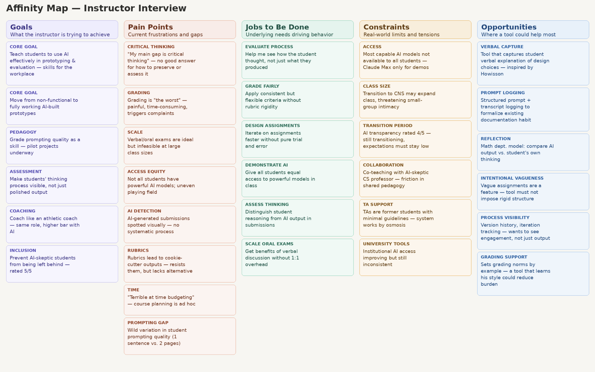
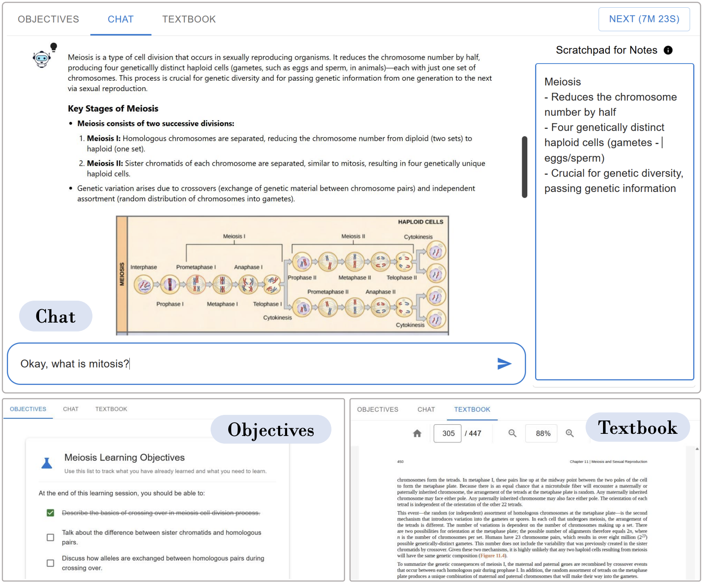
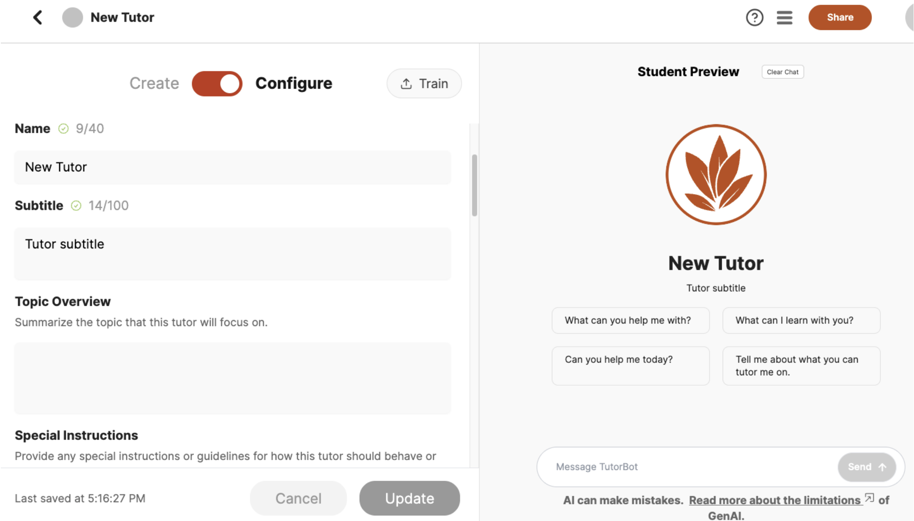

← Back to Research
Revamping Higher Education in the Age of AI
Students are increasingly learning with AI and entering an AI-enabled workforce. This work spans three projects — evaluating multimodal AI tutors, developing campus-wide AI tutor platforms platforms, and rethinking assessments — all aimed at helping higher education keep pace with responsible AI integration.
01
Rethinking Higher-Ed Assessments in the Age of AI

Methods
U.S.-wide recruitment via social media, and mailing lists
Semi-structured interviews, surveys and co-design sessionsN = 20 faculty, instructional designers, teaching assistants, and administrators
Affinity mapping and thematic analysis to surface needs, pain points, constraints, and opportunities
Generation of design insights and prototypes for assessment redesign
Findings & Impact
- Contributed practical recommendations and design insights for rethinking, developing, and evaluating higher-education assessments in the age of AI.
- Identified discipline-specific needs and opportunities for domains spanning computing, design, business, and humanities and social sciences.
- Surfaced opportunities for responsible AI-integration and associated curricula redesign by: (i) incorporating student-AI engagement in assessments, (ii) using AI for student assessment, and (iii) providing visiblity into students' process of engagement with AI.
02
Evaluating Multimodal GenAI Tutors for Student Learning

Methods
Designed MuDoC: a Multimodal, Document-grounded AI tutor
RCT comparing MuDoC against 2 baseline tutors, studying impact on learning outcomes, engagement, and student experience.
Impact
- Led to a 0.61σ boost in student scores, demonstrating meaningful learning gains from AI-assisted multimodal instruction.
- Demonstrated that multimodality also results in improved trustworthiness, leading to better student experience.
03
Campus-Wide AI Tutor Platform at UT Austin

Methods
Usability testing of campus-wide AI tutor platform + Instructor interviewsN = 20 instructors at UT Austin
Surfaced design and engineering requirements for iterative improvement
Impact
- Generated design and engineering insights addressing pedagogical, data, privacy, and ethical considerations for scalable and responsible AI tutor deployment in higher education.